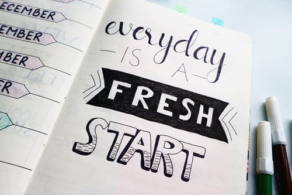

Proof reading and spell checking

Error proofing communication content is a vital part of any trade. Even people with strong grammar and spelling skills tend to make poor mistakes. Word processors like MS Word make help but they are not available every time, for example when one starts typing in notepad or other applications. You do not want to open an application which is slow to start and hogs memory just for doing a simple spell-check. The process of manual re-checking contents can be painful, however there are myriad of tools available that can make this process less laborious. Here’s a dash of such tools:
SIP for your health
SIP (Systematic Investment Plan) seems to be the rage nowadays where everyone worth his financial acumen rants about the merits of SIP. That takes care of the dhan (wealth) part, what about the tan (physical health) part? In fact, this requires a more disciplined SIP and has more long term and beneficial effects. Sounds logical? Here we go…
Backing up WordPress

Backup has been on my mind, since I started blogging on WordPress. No blog owner wants to go through the pain of losing his ideas and re-creating his writings again.
After a night worth of efforts, here’s a simple script to backup a WordPress.com hosted blog in two ways.
Code Review with ReviewBoard
Why ReviewBoard
After having tried out various review methods like direct review, reviews over email, pair programming etc, I have found that a combination of tool-assisted code review and direct review (on an as needed basis) works out to be the best in terms of efforts spent and quality of the output. SmartNBear.com:Pros and Cons of Four Kinds of Code mentions the pros and cons of the various types of reviews.
Inspirational Quotes ON the desktop

I try to keep my desktop clean so that I can display only the items that require my immediate attention. I also like to start my day with an inspirational quote. Since the desktop is the first thing one sees after booting up the system in the morning, here is a jugaad that uses Autohotkey and bginfo to put a random quote on your desktop.
I initially tried out Rainmeter and Samurize, but found them a bit too heavy for this simple application. Here is a way to do this without using any third part tools.
Tomcat: Class loaders mechanism

Tomcat creates the class-loaders with the parent-child hierarchy as shown in the diagram. The class loading is fairly intuitive. However a pragmatic developer needs to understand it properly to avoid problem with class instantiation since it differs a bit from the typical Java class loading mechanism.
Tomcat: Accessing web app classes from shared libraries
It is not a recommended practise to have libraries placed in Tomcat’s lib directory to access classes in a web application. However, there are cases when you may want to flout this practise. Tomcat’s class loading mechanism will not allow you to do so since the web classes and the lib classes are loaded by different class loaders. The workaround in such a case is to use a custom bootstrap loader. This loader should be used to load all the application specific classes.
Personal Kanban on the desktop

I have been a GTD (Getting Things Done) fan as well as an agile practitioner for years. GTD advocates creating hard deadlines so that your slate is always clean. I have been finding this tough to manage as the WIP (work in progress) has been slowly increasing each day. Personal Kanban by Jim Benson and Tonianne DeMaria Barry provided a refreshing view.